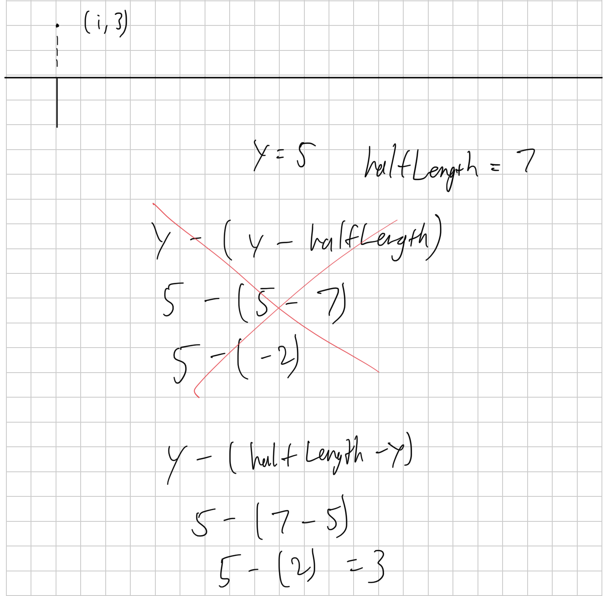

DrewBrosski!
I made a series of cool p5.js sketches that can be found here!
p5.js was a new JavaScript library I learned about in this project. Because of this, I anticipated a somewhat larger learning curve than my previous projects. I felt that the p5.js reference page in combination with video tutorials from the Coding Train was not enough for me. A good portion of my learning came from working with various example sketches and shaving off extraneous code to highlight the main points.
My dedicated gallery page that displays my sketches was developed alongside with creating these sketches. Though this project consists of 6 different p5.js sketches that range in complexity, my process when working on each sketch remained pretty much the same:
HTML file and link it to my gallery pageOne of the biggest issues I found in this project was understanding how to draw shapes in the coordinate system in p5. I have been accustomed to the "Cartesian coordinate system" so it was difficult for me to visualize where in the canvas shapes are being drawn. To address this issue, I had to draw my sketches and shapes out on graph paper.
I aim to continuing iterating on the following for this project: